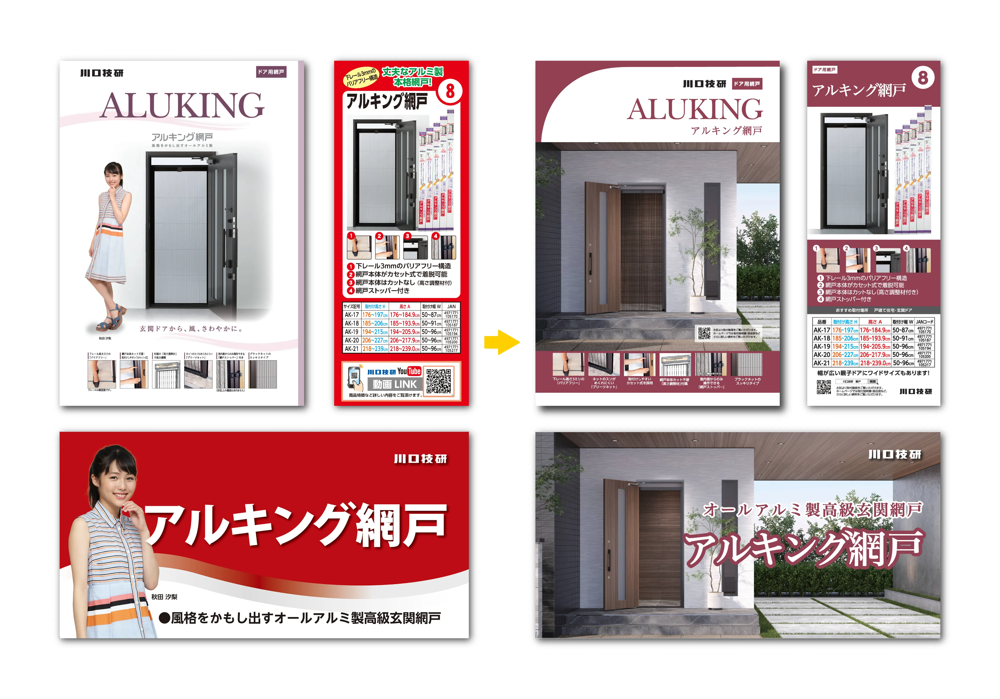
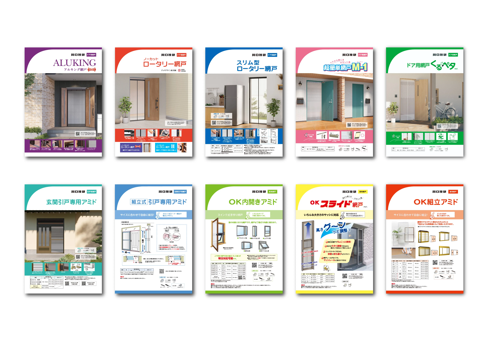
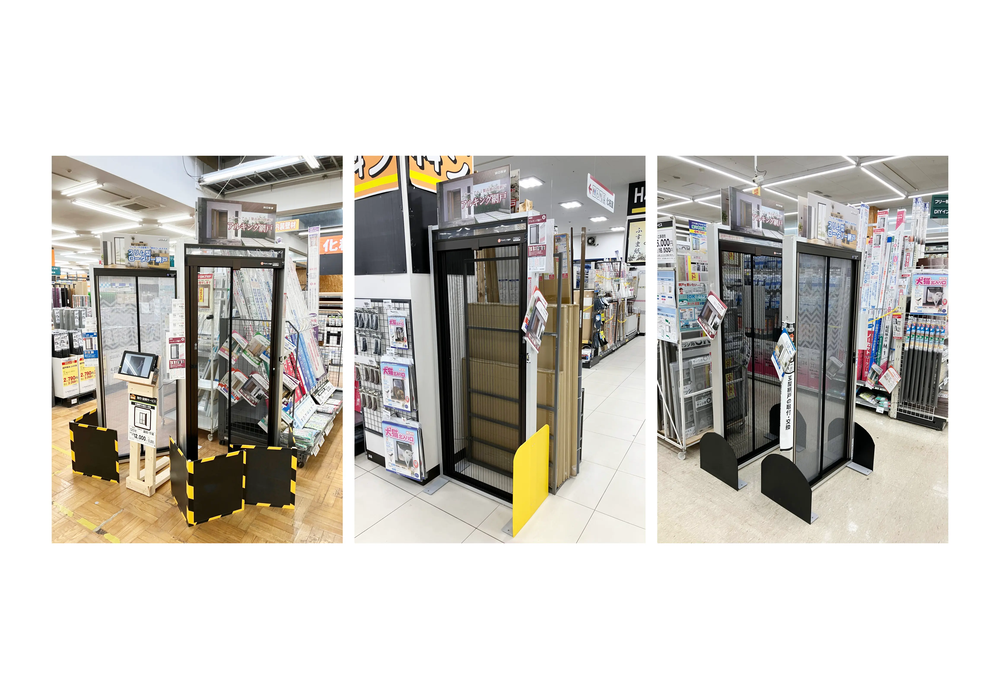

チラシ/店頭POP
B2C商品「玄関網戸シリーズ」プロモーション・リニューアル
企画・構成：旧デザインの課題抽出、新コンセプト立案
デザイン：全10種以上のチラシデザインの統一、情報の優先順位設計
店頭ツール：展示用什器（台木）向けPOPの制作、チラシとの連動設計
進行管理：仕様検討、印刷・納品管理

概要・課題
長年、女性モデルを起用した販促を展開してきましたが、権利使用期限の制限によるコスト増や、期限切れに伴う大量のカタログ廃棄が経営上の課題になっていました。また、現代のユーザーが求めているのは「モデルのイメージ」ではなく「実際の設置イメージ（施工後の外観）」であるという分析に基づき、全ラインアップのビジュアル戦略を見直しました。
こだわり・戦略
「探すストレス」をゼロにする情報設計：
10種類を超える全製品のチラシデザインを統一。表紙の下部に製品アイコンなどを集約することで、チラシを手に取った際に「一目で違いを比較できる」UI/UXを意識したレイアウトを実現しました。
「実店舗での迷い」を解消するアイデア：
店頭の展示サンプル（台木）に設置するPOPにもチラシと同じCG施工イメージを掲載。「チラシで見たイメージ」と「実物のサンプル」を頭の中一致させやすくし、購入検討時の心理的ハードルを下げました。
サステナブルな運用による大幅なコスト削減：
モデルからCGビジュアルへ切り替えたことで、定期的な撮影費用や権利更新料をゼロに。さらに「いつでも使える販促物」になったことで、廃棄ロスをなくし、環境負荷とコストの両方を大幅に改善しました。

